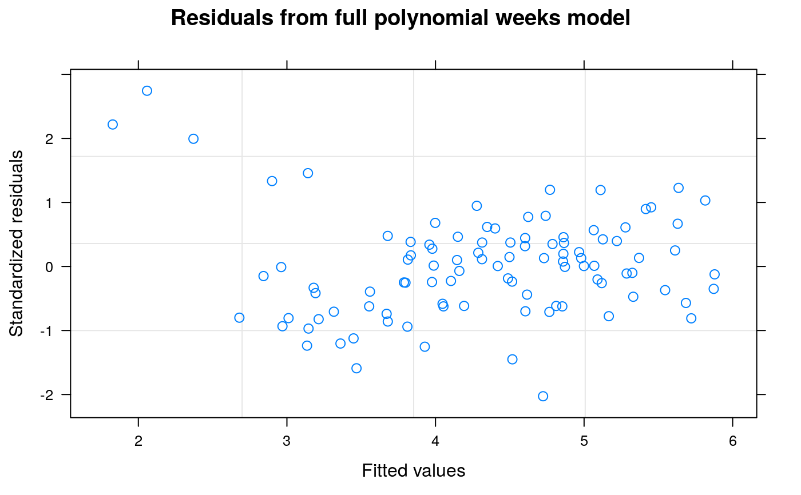

example4.RdMilliken & Johnson (1992, p. 429) discuss data which they describe as repeated leaf index measurements on sorghum. Their data set comprises five replicate blocks of four sorghum varieties and they assume equally spaced repeated measurements on each plot in each block on five consecutive occasions starting two weeks after emergence. No further information is given but it appears that the data is simulated or made-up rather than real. Although real data is more authentic, it can sometimes be useful to discuss the analysis of an example data set from the literature, even when the data is simulated. Milliken & Johnson discuss multivariate analysis of variance of the data but this method take no account of the ordered relationship between repeated observations or the likely correlation structure of the data and we will discuss alternative correlation models that are specifically intended to account for the underlying structure of repeated measures data. The interested reader can, if desired, refer to Milliken & Johnson (1992) Chapter 31 for comparison of the different approaches.
Section 1 calculates polynomials for weeks and blocks using the poly() function.
Two sets of polynomials for weeks, raw and orthogonal, are calculated and saved as sorghum$rawWeeks
and sorghum$polWeeks respectively. Orthogonal polynomials for blocks are calculated and saved as
sorghum$polBlocks. It is important to note that the poly() function calculates all polynomial
contrasts up to the required degree but does NOT include the zero-degree polynomial.
Additionally, the block variable varblock is saved as a factor factblock.
Section 2 compares five different correlation structures for the repeated measures analysis
using the gls() function of the nlme package. Each analysis fits a full factorial model for the variety-by-weeks and
blocks-by-weeks effects assuming block and treatment additivity. The goodness of fit of the five models is
compared by AIC statistics where the smaller the AIC the better the fit. Here, the AR(1)+nugget model fitted
by the corExp() function gave the best fitting model. See help(corExp)for further information about
the corExp() function. Note that corSymm represents a general correlation structure and will, presumably, give
an analysis similar to a multivariate analysis of variance. Although this structure appears to give the best fit according to the
negative log likelihood statistic, this
criterion takes no account of the number of estimated variance parameters p in the variance model which, in the case of the
corSymm model, is p = 15, compared to only p = 2 for the AR(1) model. When assessed by the AIC statistic, the
corSymm model gave the least good fit of any of the non-null correlation structures which is strong evidence that the
multivariate analysis of variance method discussed by Milliken & Johnson (1992) will lack power.
Section 3 fits a full regression model over the five weeks of repeated measures and tests for possible
variety and variety-by-weeks interactions effects. The weeks factor is decomposed into individual
polynomial contrasts (see Table A2 and Table 14) to test the significance of each individual variety-by-weeks polynomial
effect.
The analysis of polynomial contrasts shows that the variety-by-weeks interaction is due mainly to the
degree-1 = variety:rawWeeks[,1] and the
degree-2 = variety:rawWeeks[,2] effects, although there is also some evidence
of higher-degree variety-by-weeks interaction effects. The analysis also shows the corExp() range and
nugget statistics for the full fitted model and these are used to calculate the correlation coefficient
usingthe formula rho=(1-nugget)*exp(-1/range). Note that this formula is different from the the formula used in
Tables A1 and A2 and will give a different value of rho: see help(corExp).
Section 4 fits a quadratic regression model for weeks assuming the degree-3 and degree-4 polynomial week effects are zero.
The average effects of blocks are fitted by polBlocks and the interactions between the blocks and the weeks are fitted
by polBlocks:(rawWeeks[,1] + rawWeeks[,2] + polWeeks[,3]+ polWeeks[,4]). The gls() algorithm requires the same
polynomial weeks contrasts in both the blocks and the varieties models which is why raw degree-1 and degree-2 weeks contrasts have been
used for the blocks-by-weeks interaction model. However, orthogonal polynomials have better numerical stability than raw polynomials so
orthogonal polynomial contrasts have been used for the degree-3 and degree-4 weeks contrasts.
The summary analysis shows all variety effects as differences from
the intercept which, in this analysis, is variety 1 therefore all model effects in Table 15 can be derived by
adding appropriate effects to the intercept. If SED's are required, these must be calculated from the
variance/covariance matrix which can be extracted by the code vcov(). Using this matrix, the SED for variety differences was
calculated to be 0.172, the SED for the variety-by-linear weeks slope parameters was calculated to be 0.117 and the SED
for the variety-by-quadratic weeks slope parameters was calculated to be 0.0192. These estimates are approximately 2-3 percent
larger than those shown in Table 15 but it is not clear if the discrepancies are due to the model specification or to a
difference between the R and the SAS software. Possibly the implementation of the Kenward-Roger method of adjusting
the denominator d.f. and the estimated variance-covariance matrix of the estimated fixed effects might be different for the two
algorithms. The range, nugget and correlation coefficient are extracted and displayed and a
graphical plot of the studentized residuals from the quadratic regression model is also shown.
Section 5 fits a quadratic regression model for variety-by-week interaction effects assuming a full degree-4 polynomial model for weeks and blocks-by-weeks effects. The quadratic regression model in Section 4 corresponds to the regression model used for Tables 14 and 15 of Piepho and Edmondson (2018) but the range = 3397131013 and nugget = 0.4605535 of this model are very different from the range = 10.35774 and nugget = 0.1720444 of the full factorial model. As there is evidence from Table A2 that the degree-3 and degree-4 polynomial weeks effects are non-negligible, the quadratic model for weeks effects in Section 4 may be inadequate for the data and the model may be underfitted. In this section, the assumption that the degree-3 and degree-4 polynomial weeks effects are zero is relaxed and a full degree-4 model for weeks and block-by-weeks interaction effects is fitted. The fitted model for treatment effects needs to be as parsimonious as possible to ensure that estimates of treatment effects are robust against model assumptions and a degree-2 regression model for variety-by-weeks effects appears to be the most appropriate treatment model for this data. With this model, the values of the auto-correlation parameters are: range = 42.75763, nugget = 0.3586337 and correlation = 0.6265403 which are much closer to the autocorrelation parameters from the full factorial model than are those from Section 4. As the model fits the full polynomial weeks model, it is not necessary to use polynomial blocks contrasts which gives a substantial simplification in coding.
Comment The model fitted in Section 5 appears to be the best model available based on the generalized least squares method but it is clear from the graphical plots of studentized residuals that the fitted data contains outliers that are not well accommodated by the fitted model. If the data was from a real experiment, further information about the data might be available but as the data seems to be artificial this option is not available. In this situation, various robust methods of model fitting or regression analysis that can accommodate non-standard distributions or model outliers are available. However, these methods are beyond the scope of this tutorial and will not be discussed further here.
agriTutorial: return to home page if you want to select a different example
Milliken, G., & Johnson, D. (1992). Analysis of Messy Data. Volume I: Designed Experiments. CRC Press.
Kenward, M. G., & Roger, J. H. (1997). Small sample inference for fixed effects from restricted maximum likelihood. Biometrics, 53, 983–997.
Piepho, H., & Edmondson, R. (2018). A tutorial on the Statistical Analysis of Factorial Experiments with Qualitative and Quantitative treatment factor levels. Journal of Agronomy and Crop Science. (https://onlinelibrary.wiley.com/doi/full/10.1111/jac.12267).
library(broom) library(broom.mixed) library(dplyr) library(emmeans) library(ggfortify) library(ggplot2) library(lmerTest) library(magrittr) library(nlme)#> #>#> #> #>#> #> #>library(pbkrtest) library(tibble) library(tidyr) options(contrasts = c('contr.treatment', 'contr.poly')) ##---------sorghumData------- sorghum$factblock <- factor(sorghum$varblock) sorghum$rawWeeks <- poly(sorghum$varweek, degree = 4, raw = TRUE) sorghum$polWeeks <- poly(sorghum$varweek, degree = 4, raw = FALSE) sorghum$polBlocks <- poly(sorghum$varblock, degree = 4, raw = FALSE) ##-------fm4.1------- ## independent uncorrelated random plots fm4.1 <- nlme::gls(y ~ factweek * (Replicate + variety), sorghum) fm4.1.ANOVA <- anova(fm4.1) fm4.1.glance <- broom::glance(fm4.1) fm4.1.Variogram <- nlme::Variogram(fm4.1) ##----fm4.1.ANOVA---- fm4.1.ANOVA#> Denom. DF: 60 #> numDF F-value p-value #> (Intercept) 1 80947.08 <.0001 #> factweek 4 220.90 <.0001 #> Replicate 4 358.86 <.0001 #> variety 3 334.87 <.0001 #> factweek:Replicate 16 1.82 0.0495 #> factweek:variety 12 4.48 <.0001##----fm4.1.glance---- fm4.1.glance#> # A tibble: 1 x 6 #> sigma df logLik AIC BIC df.residual #> <dbl> <int> <dbl> <dbl> <dbl> <int> #> 1 0.152 40 1.87 78.3 164. 60##----fm4.1.Variogram---- fm4.1.Variogram#> variog dist n.pairs #> 1 0.4844580 2 195 #> 2 0.6952706 5 285 #> 3 0.5949027 7 185 #> 4 0.6395966 10 270 #> 5 0.6253573 13 261 #> 6 0.7140342 16 252 #> 7 0.6430040 19 243 #> 8 0.5396552 22 234 #> 9 0.5933554 25 225 #> 10 0.5017639 28 286 #> 11 0.5515372 32 204 #> 12 0.5603973 35 258 #> 13 0.4864744 39 242 #> 14 0.5010566 43 226 #> 15 0.6216947 48 260 #> 16 0.7288533 53 235 #> 17 0.5576019 58 249 #> 18 0.7579793 65 276 #> 19 1.0266935 74 234 #> 20 0.3877214 85 231##-------fm4.2------- ## corCompSymm compound symmetry fm4.2 <- nlme::gls(y ~ factweek * (Replicate + variety), corr = corCompSymm(form = ~ varweek|factplot), sorghum) fm4.2.ANOVA <- anova(fm4.2) fm4.2.glance <- broom::glance(fm4.2) fm4.2.Variogram <- nlme::Variogram(fm4.2) ##----fm4.2.ANOVA---- fm4.2.ANOVA#> Denom. DF: 60 #> numDF F-value p-value #> (Intercept) 1 21284.930 <.0001 #> factweek 4 738.198 <.0001 #> Replicate 4 94.361 <.0001 #> variety 3 88.053 <.0001 #> factweek:Replicate 16 6.077 <.0001 #> factweek:variety 12 14.975 <.0001##----fm4.2.glance---- fm4.2.glance#> # A tibble: 1 x 6 #> sigma df logLik AIC BIC df.residual #> <dbl> <int> <dbl> <dbl> <dbl> <int> #> 1 0.152 40 22.8 38.4 126. 60##----fm4.2.Variogram---- fm4.2.Variogram#> variog dist n.pairs #> 1 0.1458280 1 80 #> 2 0.1805148 2 60 #> 3 0.2136222 3 40 #> 4 0.2433676 4 20##-------fm4.3------- ## corExp without nugget fm4.3 <- nlme::gls(y ~ factweek * (Replicate + variety), corr = corExp(form = ~ varweek|factplot), sorghum) fm4.3.ANOVA <- anova(fm4.3) fm4.3.glance <- broom::glance(fm4.3) fm4.3.Variogram <- nlme::Variogram(fm4.3) ##----fm4.3.ANOVA---- fm4.3.ANOVA#> Denom. DF: 60 #> numDF F-value p-value #> (Intercept) 1 26108.428 <.0001 #> factweek 4 272.514 <.0001 #> Replicate 4 112.786 <.0001 #> variety 3 102.241 <.0001 #> factweek:Replicate 16 3.206 5e-04 #> factweek:variety 12 10.297 <.0001##----fm4.3.glance---- fm4.3.glance#> # A tibble: 1 x 6 #> sigma df logLik AIC BIC df.residual #> <dbl> <int> <dbl> <dbl> <dbl> <int> #> 1 0.149 40 23.0 38.0 126. 60##----fm4.3.Variogram---- fm4.3.Variogram#> variog dist n.pairs #> 1 0.1525443 1 80 #> 2 0.1888286 2 60 #> 3 0.2234608 3 40 #> 4 0.2545762 4 20##-------fm4.4------- ## corExp with nugget fm4.4 <- nlme::gls(y ~ factweek * (Replicate + variety), corr = corExp(form = ~ varweek|factplot, nugget = TRUE), sorghum) fm4.4.ANOVA <- anova(fm4.4) fm4.4.glance <- broom::glance(fm4.4) fm4.4.Variogram <- nlme::Variogram(fm4.4) ##----fm4.4.ANOVA---- fm4.4.ANOVA#> Denom. DF: 60 #> numDF F-value p-value #> (Intercept) 1 22278.120 <.0001 #> factweek 4 447.078 <.0001 #> Replicate 4 97.680 <.0001 #> variety 3 88.735 <.0001 #> factweek:Replicate 16 4.220 <.0001 #> factweek:variety 12 12.578 <.0001##----fm4.4.glance---- fm4.4.glance#> # A tibble: 1 x 6 #> sigma df logLik AIC BIC df.residual #> <dbl> <int> <dbl> <dbl> <dbl> <int> #> 1 0.150 40 24.3 37.5 128. 60##----fm4.4.Variogram---- fm4.4.Variogram#> variog dist n.pairs #> 1 0.1502717 1 80 #> 2 0.1860155 2 60 #> 3 0.2201317 3 40 #> 4 0.2507836 4 20##-------fm4.5------- ## corSymm unstructured fm4.5 <- nlme::gls(y ~ factweek * (Replicate + variety), corr = corSymm(form = ~ 1|factplot), weights = varIdent(form = ~ 1|varweek), sorghum) fm4.5.ANOVA <- anova(fm4.5) fm4.5.glance <- broom::glance(fm4.5) fm4.5.Variogram <- nlme::Variogram(fm4.5) ##----fm4.5.ANOVA---- fm4.5.ANOVA#> Denom. DF: 60 #> numDF F-value p-value #> (Intercept) 1 57534.14 <.0001 #> factweek 4 594.16 <.0001 #> Replicate 4 217.57 <.0001 #> variety 3 144.72 <.0001 #> factweek:Replicate 16 4.04 <.0001 #> factweek:variety 12 12.18 <.0001##----fm4.5.glance---- fm4.5.glance#> # A tibble: 1 x 6 #> sigma df logLik AIC BIC df.residual #> <dbl> <int> <dbl> <dbl> <dbl> <int> #> 1 0.141 40 31.5 47.1 162. 60##----fm4.5.Variogram---- fm4.5.Variogram#> variog dist n.pairs #> 1 0.1421985 1 80 #> 2 0.1789136 2 60 #> 3 0.2110624 3 40 #> 4 0.2797197 4 20##----Models.Summary---- Model <- c("ID", "CS", "AR(1)", "AR(1) + nugget", "UN") Models.Summary <- cbind(Model, rbind( fm4.1.glance , fm4.2.glance , fm4.3.glance , fm4.3.glance , fm4.5.glance )) Models.Summary#> Model sigma df logLik AIC BIC df.residual #> 1 ID 0.1522361 40 1.869316 78.26137 164.1295 60 #> 2 CS 0.1522361 40 22.810374 38.37925 126.3417 60 #> 3 AR(1) 0.1488471 40 22.977679 38.04464 126.0071 60 #> 4 AR(1) + nugget 0.1488471 40 22.977679 38.04464 126.0071 60 #> 5 UN 0.1405318 40 31.451417 47.09717 162.2861 60##----fm4.6---- fm4.6 <- nlme::gls( y ~ (factblock+variety) * (varweek + I(varweek^2) + I(varweek^3) + I(varweek^4)) , corr = corExp(form = ~ varweek | factplot, nugget = TRUE) , sorghum) fm4.6.ANOVA <- anova(fm4.6) fm4.6.Coef <- broom::tidy(fm4.6) fm4.6.vcov <- vcov(fm4.6) fm4.6.Par <- tibble::tibble( "Parameter" = c("Range", "Nugget", "rho") , "Value" = c( coef(fm4.6$modelStruct$corStruct, unconstrained = FALSE)[1] , coef(fm4.6$modelStruct$corStruct, unconstrained = FALSE)[2] , (1-coef(fm4.6$modelStruct$corStruct, unconstrained = FALSE)[2])* exp(-1/coef(fm4.6$modelStruct$corStruct, unconstrained = FALSE)[1]) ) ) fm4.6.ACF <- nlme::ACF(fm4.6) ##----fm4.6.ANOVA---- fm4.6.ANOVA#> Denom. DF: 60 #> numDF F-value p-value #> (Intercept) 1 22278.120 <.0001 #> factblock 4 97.680 <.0001 #> variety 3 88.735 <.0001 #> varweek 1 1687.507 <.0001 #> I(varweek^2) 1 62.675 <.0001 #> I(varweek^3) 1 18.088 0.0001 #> I(varweek^4) 1 20.042 <.0001 #> factblock:varweek 4 12.449 <.0001 #> factblock:I(varweek^2) 4 1.694 0.1632 #> factblock:I(varweek^3) 4 0.081 0.9878 #> factblock:I(varweek^4) 4 2.654 0.0416 #> variety:varweek 3 21.194 <.0001 #> variety:I(varweek^2) 3 16.621 <.0001 #> variety:I(varweek^3) 3 7.699 0.0002 #> variety:I(varweek^4) 3 4.797 0.0046##----fm4.6.Coef---- fm4.6.Coef#> # A tibble: 40 x 5 #> term estimate std.error statistic p.value #> <chr> <dbl> <dbl> <dbl> <dbl> #> 1 (Intercept) 1.53 0.705 2.17 0.0339 #> 2 factblock2 0.652 0.788 0.828 0.411 #> 3 factblock3 0.950 0.788 1.21 0.233 #> 4 factblock4 0.725 0.788 0.920 0.361 #> 5 factblock5 0.423 0.788 0.536 0.594 #> 6 variety2 2.71 0.705 3.84 0.000296 #> 7 variety3 0.398 0.705 0.565 0.574 #> 8 variety4 3.20 0.705 4.55 0.0000269 #> 9 varweek 6.70 1.29 5.20 0.00000249 #> 10 I(varweek^2) -4.15 0.772 -5.37 0.00000134 #> # … with 30 more rows##----fm4.6.Par---- fm4.6.Par#> # A tibble: 3 x 2 #> Parameter Value #> <chr> <dbl> #> 1 Range 10.4 #> 2 Nugget 0.172 #> 3 rho 0.752##----fm4.6.Plot2---- plot(fm4.6, sub.caption = NA, main = "Residuals from full polynomial weeks model")##----fm4.7---- fm4.7 <- nlme::gls( y ~ polBlocks + variety + rawWeeks[,1] + rawWeeks[,2] + polBlocks:(rawWeeks[,1] + rawWeeks[,2]+ polWeeks[,3] + polWeeks[,4]) + variety:(rawWeeks[,1] + rawWeeks[,2]) , corr = corExp(form = ~ varweek | factplot, nugget=TRUE), sorghum) fm4.7.ANOVA <- anova(fm4.7) fm4.7.Coef <- broom::tidy(fm4.7) fm4.7.vcov <- vcov(fm4.7) fm4.7.Par <- tibble::tibble( "Parameter" = c("Range", "Nugget", "rho") , "Value" = c( coef(fm4.7$modelStruct$corStruct, unconstrained = FALSE)[1] , coef(fm4.7$modelStruct$corStruct, unconstrained = FALSE)[2] , (1-coef(fm4.7$modelStruct$corStruct, unconstrained = FALSE)[2])* exp(-1/coef(fm4.7$modelStruct$corStruct, unconstrained = FALSE)[1]) ) ) fm4.7.ACF <- nlme::ACF(fm4.7) ##----fm4.7.ANOVA---- fm4.7.ANOVA#> Denom. DF: 68 #> numDF F-value p-value #> (Intercept) 1 21284.944 <.0001 #> polBlocks 4 94.361 <.0001 #> variety 3 88.053 <.0001 #> rawWeeks[, 1] 1 1548.209 <.0001 #> rawWeeks[, 2] 1 29.762 <.0001 #> polBlocks:rawWeeks[, 1] 4 11.277 <.0001 #> polBlocks:rawWeeks[, 2] 4 0.794 0.5335 #> polBlocks:polWeeks[, 3] 4 0.034 0.9978 #> polBlocks:polWeeks[, 4] 4 1.011 0.4081 #> variety:rawWeeks[, 1] 3 19.094 <.0001 #> variety:rawWeeks[, 2] 3 8.219 0.0001##----fm4.7.Coef---- fm4.7.Coef#> # A tibble: 32 x 5 #> term estimate std.error statistic p.value #> <chr> <dbl> <dbl> <dbl> <dbl> #> 1 (Intercept) 4.68 0.122 38.4 7.73e-48 #> 2 polBlocks1 -6.45 0.609 -10.6 5.13e-16 #> 3 polBlocks2 -1.26 0.609 -2.07 4.25e- 2 #> 4 polBlocks3 -0.110 0.609 -0.180 8.58e- 1 #> 5 polBlocks4 0.369 0.609 0.605 5.47e- 1 #> 6 variety2 0.785 0.172 4.56 2.23e- 5 #> 7 variety3 0.0732 0.172 0.425 6.72e- 1 #> 8 variety4 0.501 0.172 2.91 4.92e- 3 #> 9 rawWeeks[, 1] -0.379 0.0829 -4.57 2.12e- 5 #> 10 rawWeeks[, 2] -0.00429 0.0136 -0.316 7.53e- 1 #> # … with 22 more rows##----fm4.7.Par---- fm4.7.Par#> # A tibble: 3 x 2 #> Parameter Value #> <chr> <dbl> #> 1 Range 2.84e+9 #> 2 Nugget 4.61e-1 #> 3 rho 5.39e-1##----fm4.7.Plot2---- plot(fm4.7, sub.caption = NA, main = "Residuals from quadratic regression model")##----fm4.8---- fm4.8 <- nlme::gls( y ~ Replicate * (rawWeeks[,1] + rawWeeks[,2] + polWeeks[,3] + polWeeks[,4]) + variety * (rawWeeks[,1] + rawWeeks[,2]) , corr = corExp(form = ~ varweek | factplot, nugget = TRUE), sorghum) fm4.8.ANOVA <- anova(fm4.8) fm4.8.Coef <- broom::tidy(fm4.8) fm4.8.vcov <- vcov(fm4.8) fm4.8.Par <- tibble::tibble( "Parameter" = c("Range", "Nugget", "rho") , "Value" = c( coef(fm4.8$modelStruct$corStruct, unconstrained = FALSE)[1] , coef(fm4.8$modelStruct$corStruct, unconstrained = FALSE)[2] , (1-coef(fm4.8$modelStruct$corStruct, unconstrained = FALSE)[2])* exp(-1/coef(fm4.8$modelStruct$corStruct, unconstrained = FALSE)[1]) ) ) fm4.8.ACF <- nlme::ACF(fm4.8) ##----fm4.8.ANOVA---- fm4.8.ANOVA#> Denom. DF: 66 #> numDF F-value p-value #> (Intercept) 1 21467.274 <.0001 #> Replicate 4 95.007 <.0001 #> rawWeeks[, 1] 1 1811.798 <.0001 #> rawWeeks[, 2] 1 39.995 <.0001 #> polWeeks[, 3] 1 10.228 0.0021 #> polWeeks[, 4] 1 10.559 0.0018 #> variety 3 88.215 <.0001 #> Replicate:rawWeeks[, 1] 4 13.217 <.0001 #> Replicate:rawWeeks[, 2] 4 1.068 0.3795 #> Replicate:polWeeks[, 3] 4 0.046 0.9959 #> Replicate:polWeeks[, 4] 4 1.398 0.2443 #> rawWeeks[, 1]:variety 3 22.388 <.0001 #> rawWeeks[, 2]:variety 3 10.994 <.0001##----fm4.8.Coef---- fm4.8.Coef#> # A tibble: 34 x 5 #> term estimate std.error statistic p.value #> <chr> <dbl> <dbl> <dbl> <dbl> #> 1 (Intercept) 5.46 0.155 35.2 1.62e-44 #> 2 Replicate2 -0.302 0.173 -1.75 8.53e- 2 #> 3 Replicate3 -0.569 0.173 -3.29 1.63e- 3 #> 4 Replicate4 -1.18 0.173 -6.83 3.23e- 9 #> 5 Replicate5 -1.84 0.173 -10.6 6.47e-16 #> 6 rawWeeks[, 1] -0.412 0.102 -4.05 1.37e- 4 #> 7 rawWeeks[, 2] -0.00938 0.0166 -0.566 5.73e- 1 #> 8 polWeeks[, 3] 0.385 0.217 1.78 7.97e- 2 #> 9 polWeeks[, 4] -0.686 0.216 -3.18 2.24e- 3 #> 10 variety2 0.786 0.155 5.07 3.38e- 6 #> # … with 24 more rows##----fm4.8.Par---- fm4.8.Par#> # A tibble: 3 x 2 #> Parameter Value #> <chr> <dbl> #> 1 Range 42.8 #> 2 Nugget 0.359 #> 3 rho 0.627##----fm4.8.Plot2---- plot(fm4.8,sub.caption = NA, main = "Quadratic treatment-by-weeks model with full blocks-by-weeks model")